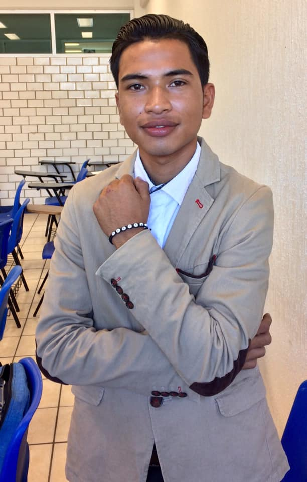

Biografia
Perfiles


Mi nombre es Alexis Hernandez de los Santos.
Nací en Cd. Acuña Coahuila,México,tengo 22 años. A los 6 años ingrese a la Esc.Prim. Mtra. Virginia Gonzali, en la cual formé parte del equipo de futbol que representaba a la escuela a nivel estatal, también fui miembro de la escolta por dos años. Ingreso a la secundaria Esc.Sec.Est Manuel Beltrán Bastar,a los 12 años, la cual fue una etapa no tan buena adaptarme a nuevos cambios, ingresar a la preparatoria fue de lo mejor, inicie el primer semestre en Cetís 40 Cunduacan,con la visión de ser técnico en mecánica industrial, terminando el primer semestre, tuve que cambiarme de preparatoria y carrera, lo cual ingrese al Cecyte 4 Comalcalco, iniciando como técnico en soporte y mantenimiento de equipo de cómputo, fue una de las mejores etapas académicas, actualmente curso el octavo semestre de la carrera ingeniería en sistemas computacionales en el ITSC.
Mis intereses y pasiones son la mecánica general, en tiempos libres suele estudiar y practicar, esto me ha llevado a descubrir el funcionamiento y fallas de muchas cosas.
Como experiencia laboral cuento con a más de 5 años laborando en un taller de mecánica general de forma informal, también desarrollo mis habilidades de mi carrera en varias empresas que requieren servicios de soporte en redes y construcciones de fibra óptica y enlaces inalámbricos, mi último empleo de 3 meses como supervisor de seguridad industrial en el proyecto de la nueva refinería dos bocas. Mi proyecto personal a corto plazo es titularme lo antes posible, para poder ingresar a la Marina como técnico informático y desarrollar nuevas habilidades al igual que mejorar conocimientos, a largo plazo mudarme de ciudad, construir una casa y viajar.
Cuento con habilidades personales muy características las cuales me han llevado a relacionarme con personas de altos mandos y tener preferencias en varios ámbitos. Mis habilidades son: Trabajo en equipo, excelente comunicación, liderazgo, productivo y solución de problemas. Un día lo soñé, un día lo pensé y hoy lo estoy logrando, no todo puede ser de un día para otro, pero más sin embargo puedes ir trabajando en tus sueños.